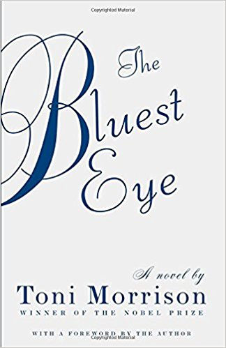

Inspired by the Black Lives Matter movement, Angie Thomas's searing debut about an ordinary girl in extraordinary circumstances addresses issues of racism and police violence with intelligence, heart, and unflinching honesty. Sixteen-year-old Starr Carter moves between two worlds: the poor neighborhood where she lives and the fancy suburban prep school she attends. The uneasy balance between these worlds is shattered when Starr witnesses the fatal shooting of her childhood best friend Khalil at the hands of a police officer. Khalil was unarmed. Soon afterward, his death is a national headline. Some are calling him a thug, maybe even a drug dealer and a gangbanger. Protesters are taking to the streets in Khalil's name. Some cops and the local drug lord try to intimidate Starr and her family. What everyone wants to know is: what really went down that night? And the only person alive who can answer that is Starr. But what Starr does - or does not - say could upend her community. It could also endanger her life.
The Bluest Eye

Pecola Breedlove, a young black girl, prays every day for beauty. Mocked by other children for the dark skin, curly hair and brown eyes that set her apart, she yearns for the blonde hair and blue eyes that she believes will allow her to finally fir in. Yet as her dream grows more fervent, her life slowly starts to disintegrate in the face of adversity and strife. A brilliant examination of our obsession with beauty and conformity. Toni Morrison's virtuosic first novel asks powerful questions about race, class and gender with subtlety and grace that have always characterized her writing.
The Sellout
A biting satire about a young man's isolated upbringing and the race trial that sends him to the Supreme Court, Paul Beatty's The Sellout showcases a comic genius at the top of his game. It challenges the sacred tenets of the United States Constitution, urban life, the civil rights movement, the father-son relationship, and the holy grail of racial equality - the black Chinese restaurant. Born in the "agrarian ghetto" of Dickens - on the southern outskirts of Los Angeles - the narrator of The Sellout resigns himself to the fate of lower-middle-class Californians: "I'd die in the same bedroom I'd grown up in, looking up at the cracks in the stucco ceiling that've been there since '68 quake." Raised by a single father, a controversial sociologist, he spent his childhood as the subject in racially charged psychological studies. He is led to believe that his father's pioneering work will result in a memoir that will solve his family's financial woes. But when his father is killed in a police shoot-out, he realizes there never was a memoir. All that's left is the bill for a drive-thru funeral.